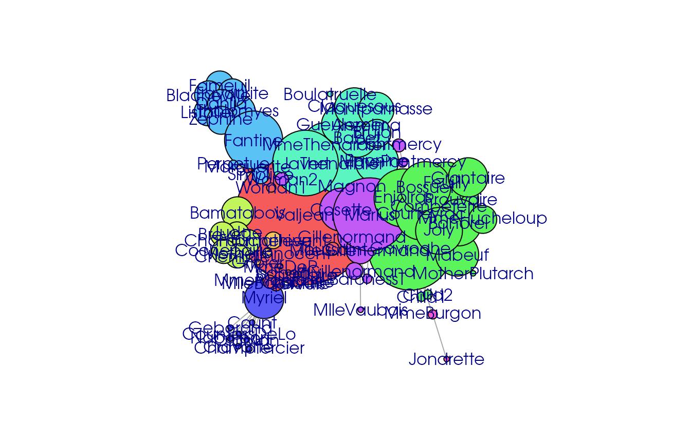
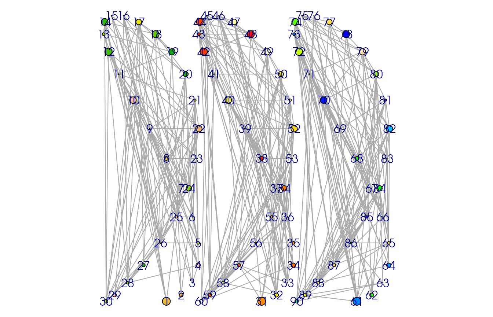

The rgexf package provides a way to interact with GEXF files. The GEXF standard was developed by the Gephi–“Like Photoshop for graphs”–core team, and can be used to save static and dynamic networks.
With the rgexf package, users can create gexf (R) objects from scratch, import GEXF files, coerce gexf objects into igraph objects, and visualize graphs using the gexf-js JavaScript library. In this vignette, we will illustrate how can we (a) import a GEXF file into R and visualize it with igraph, and (b) create a gexf object from scratch.
The rgexf package comes with a network from Les Misérables, which is featured in Gephi. To read GEXF files, we can use the read.gexf function:
# Loading rgexf
library(rgexf)
# Accessing the path of the file
fn <- system.file(
"gexf-graphs/lesmiserables.gexf", package = "rgexf"
)
lesmi <- read.gexf(fn)
# Taking a look at the first handful of nodes and edges
head(lesmi)## <?xml version="1.0" encoding="UTF-8"?>
## <gexf xmlns="http://www.gexf.net/1.3" xmlns:viz="http://www.gexf.net/1.3/viz" xmlns:xsi="http://www.w3.org/2001/XMLSchema-instance" version="1.3" xsi:schemaLocation="http://www.gexf.net/1.3 http://www.gexf.net/1.3/gexf.xsd">
## <meta lastmodifieddate="2016-11-09">
## <creator>Gephi 0.9</creator>
## <description/>
## </meta>
## <graph defaultedgetype="undirected" mode="static">
## <attributes class="node" mode="static">
## <attribute id="modularity_class" title="Modularity Class" type="integer"/>
## </attributes>
## <nodes>
## <node id="11" label="Valjean">
## <attvalues>
## <attvalue for="modularity_class" value="1"/>
## </attvalues>
## <viz:size value="100.0"/>
## <viz:position x="-87.93029" y="6.8120565"/>
## <viz:color r="245" g="91" b="91"/>
## </node>
## <node id="48" label="Gavroche">
## <attvalues>
## <attvalue for="modularity_class" value="8"/>
## </attvalues>
## <viz:size value="61.600006"/>
## <viz:position x="387.89572" y="-110.462326"/>
## <viz:color r="91" g="245" b="91"/>
## </node>
## <node id="55" label="Marius">
## <attvalues>
## <attvalue for="modularity_class" value="6"/>
## </attvalues>
## <viz:size value="53.37143"/>
## <viz:position x="206.44687" y="13.805411"/>
## <viz:color r="194" g="91" b="245"/>
## </node>
## <node id="27" label="Javert">
## <attvalues>
## <attvalue for="modularity_class" value="7"/>
## </attvalues>
## <viz:size value="47.88571"/>
## <viz:position x="-81.46074" y="204.20204"/>
## <viz:color r="91" g="245" b="194"/>
## </node>
## <node id="25" label="Thenardier">
## <attvalues>
## <attvalue for="modularity_class" value="7"/>
## </attvalues>
## <viz:size value="45.142853"/>
## <viz:position x="82.80825" y="203.1144"/>
## <viz:color r="91" g="245" b="194"/>
## </node>
## <node id="23" label="Fantine">
## <attvalues>
## <attvalue for="modularity_class" value="2"/>
## </attvalues>
## <viz:size value="42.4"/>
## <viz:position x="-313.42786" y="289.44803"/>
## <viz:color r="91" g="194" b="245"/>
## </node>
## ...
## </nodes>
## <edges>
## <edge id="0" source="1" target="0"/>
## <edge id="1" source="2" target="0" weight="8.0"/>
## <edge id="2" source="3" target="0" weight="10.0"/>
## <edge id="3" source="3" target="2" weight="6.0"/>
## <edge id="4" source="4" target="0"/>
## <edge id="5" source="5" target="0"/>
## ...
## </edges>
## </graph>
## </gexf>Moreover, we can directly plot the graph using the plot.gexf method–through the gexf-js library–or coercing it into an igraph object and use igraph’s plotting engine:
lesmi_ig <- gexf.to.igraph(lesmi)
lesmi_ig## IGRAPH dd14d29 UNW- 77 254 --
## + attr: layout (g/n), name (v/c), color (v/c), size (v/n), weight (e/n)
## + edges from dd14d29 (vertex names):
## [1] Myriel --Napoleon Myriel --MlleBaptistine
## [3] Myriel --MmeMagloire MlleBaptistine--MmeMagloire
## [5] Myriel --CountessDeLo Myriel --Geborand
## [7] Myriel --Champtercier Myriel --Cravatte
## [9] Myriel --Count Myriel --OldMan
## [11] Myriel --Valjean Valjean --MlleBaptistine
## [13] Valjean --MmeMagloire Labarre --Valjean
## [15] Valjean --Marguerite Valjean --MmeDeR
## + ... omitted several edges
par(op)We can also go back:
head(igraph.to.gexf(lesmi_ig))## <?xml version="1.0" encoding="UTF-8"?>
## <gexf xmlns="http://www.gexf.net/1.3" xmlns:viz="http://www.gexf.net/1.3/viz" xmlns:xsi="http://www.w3.org/2001/XMLSchema-instance" xsi:schemaLocation="http://www.gexf.net/1.3 http://www.gexf.net/1.3/gexf.xsd" version="1.3">
## <meta lastmodifieddate="2021-08-10">
## <creator>NodosChile</creator>
## <description>A GEXF file written in R with "rgexf"</description>
## <keywords>GEXF, NodosChile, R, rgexf, Gephi</keywords>
## </meta>
## <graph mode="static" defaultedgetype="undirected">
## <nodes>
## <node id="Myriel" label="Myriel">
## <viz:color r="91" g="91" b="245" a="1"/>
## <viz:position x="-59.3517589858971" y="-56.1581638991552" z="0"/>
## <viz:size value="2.8685715"/>
## </node>
## <node id="Napoleon" label="Napoleon">
## <viz:color r="91" g="91" b="245" a="1"/>
## <viz:position x="-83.9713511303431" y="-85.1340358664038" z="0"/>
## <viz:size value="0.4"/>
## </node>
## <node id="Labarre" label="Labarre">
## <viz:color r="245" g="91" b="91" a="1"/>
## <viz:position x="-30.4625964839155" y="-43.3372506578706" z="0"/>
## <viz:size value="0.4"/>
## </node>
## <node id="Valjean" label="Valjean">
## <viz:color r="245" g="91" b="91" a="1"/>
## <viz:position x="-30.2329665737823" y="4.17800221251834" z="0"/>
## <viz:size value="10"/>
## </node>
## <node id="Marguerite" label="Marguerite">
## <viz:color r="245" g="91" b="91" a="1"/>
## <viz:position x="-71.2259031158826" y="39.194220798322" z="0"/>
## <viz:size value="0.6742859"/>
## </node>
## <node id="MmeDeR" label="MmeDeR">
## <viz:color r="245" g="91" b="91" a="1"/>
## <viz:position x="-47.5486940358376" y="-32.3118111852591" z="0"/>
## <viz:size value="0.4"/>
## </node>
## ...
## </nodes>
## <edges>
## <edge id="0" source="Myriel" target="Napoleon" weight="1"/>
## <edge id="1" source="Myriel" target="MlleBaptistine" weight="8"/>
## <edge id="2" source="Myriel" target="MmeMagloire" weight="10"/>
## <edge id="3" source="MlleBaptistine" target="MmeMagloire" weight="6"/>
## <edge id="4" source="Myriel" target="CountessDeLo" weight="1"/>
## <edge id="5" source="Myriel" target="Geborand" weight="1"/>
## ...
## </edges>
## </graph>
## </gexf>This example was extracted directly from the demo “gexfrandom.” Here we create three networks with the same set of vertices and layout, we color them and finalize plotting it with igraph.
# Random graph demo
set.seed(11)Creating the vertices:
# Vertex
n <- 30
prb <- .3
vertex1 <- data.frame(id = 1:n, label = 1:n)
vertex2 <- data.frame(id = (n + 1):(2 * n), label = (n + 1):(2 * n))
vertex3 <- data.frame(
id = (2 * n + 1):(3 * n), label = (2 * n + 1):(3 * n)
)Building edges:
# Edges
edges1 <- combn(vertex1$label, 2)
edges1 <- edges1[, which(runif(ncol(edges1)) > (1 - prb))]
edges1 <- data.frame(source = edges1[1, ], target = edges1[2, ])
edges2 <- combn(vertex2$label, 2)
edges2 <- edges2[, which(runif(ncol(edges2)) > (1 - prb))]
edges2 <- data.frame(source = edges2[1, ], target = edges2[2, ])
edges3 <- combn(vertex3$label, 2)
edges3 <- edges3[, which(runif(ncol(edges3)) > (1 - prb))]
edges3 <- data.frame(source = edges3[1, ], target = edges3[2, ])We can and add visual attributes:
# Visual attributes
size <- runif(n, max = 100)
color <- terrain.colors(n)
color <- color[order(runif(n))][1:n]
color <- cbind(t(col2rgb(color)), 1)
color2 <- heat.colors(n)
color2 <- color2[order(runif(n))][1:n]
color2 <- cbind(t(col2rgb(color2)), 1)
color3 <- topo.colors(n)
color3 <- color3[order(runif(n))][1:n]
color3 <- cbind(t(col2rgb(color3)), 1)Generating a layout:
# Nice layout
pos <- matrix(0, nrow = n, ncol = 3)
for (i in 2:n) {
pos[i, 1] <- pos[i - 1, 1] + cos(2 * pi * (i * 1.7 - 1) / n)
pos[i, 2] <- pos[i - 1, 2] + sin(2 * pi * (i - 1) / n)
}
pos <- pos / (max(pos) - min(pos))
pos2 <- pos
pos2[, 1] <- pos2[, 1] + max(pos2[, 1]) - min(pos[, 1])
pos3 <- pos
pos3[, 1] <- pos3[, 1] + max(pos2[, 1]) - min(pos[, 1])And finally, we can build the gexf object:
graph <- gexf(
rbind(vertex1, vertex2, vertex3),
rbind(edges1, edges2, edges3),
nodesVizAtt = list(
size = c(size, size, size),
color = rbind(color, color2, color3),
position = rbind(pos, pos2, pos3)
)
)
# Taking a quick look
head(graph)## <?xml version="1.0" encoding="UTF-8"?>
## <gexf xmlns="http://www.gexf.net/1.3" xmlns:viz="http://www.gexf.net/1.3/viz" xmlns:xsi="http://www.w3.org/2001/XMLSchema-instance" xsi:schemaLocation="http://www.gexf.net/1.3 http://www.gexf.net/1.3/gexf.xsd" version="1.3">
## <meta lastmodifieddate="2021-08-10">
## <creator>NodosChile</creator>
## <description>A GEXF file written in R with "rgexf"</description>
## <keywords>GEXF, NodosChile, R, rgexf, Gephi</keywords>
## </meta>
## <graph mode="static" defaultedgetype="undirected">
## <nodes>
## <node id="1" label="1">
## <viz:color r="233" g="187" b="62" a="1"/>
## <viz:position x="-56.0799678907797" y="-100" z="0"/>
## <viz:size value="10"/>
## </node>
## <node id="2" label="2">
## <viz:color r="235" g="178" b="94" a="1"/>
## <viz:position x="-45.6930628255776" y="-95.6295201467611" z="0"/>
## <viz:size value="4.95748278927415"/>
## </node>
## <node id="3" label="3">
## <viz:color r="242" g="242" b="242" a="1"/>
## <viz:position x="-37.9480370990221" y="-87.079571381759" z="0"/>
## <viz:size value="0.337997611829421"/>
## </node>
## <node id="4" label="4">
## <viz:color r="240" g="201" b="192" a="1"/>
## <viz:position x="-33.8163959209204" y="-74.7238274932304" z="0"/>
## <viz:size value="5.50694120090748"/>
## </node>
## <node id="5" label="5">
## <viz:color r="151" g="211" b="0" a="1"/>
## <viz:position x="-33.8163959209204" y="-59.1022937785412" z="0"/>
## <viz:size value="3.43443007471073"/>
## </node>
## <node id="6" label="6">
## <viz:color r="232" g="195" b="46" a="1"/>
## <viz:position x="-37.9480370990221" y="-40.8977062214588" z="0"/>
## <viz:size value="0.687453831889737"/>
## </node>
## ...
## </nodes>
## <edges>
## <edge id="0" source="1" target="7" weight="1"/>
## <edge id="1" source="1" target="10" weight="1"/>
## <edge id="2" source="1" target="14" weight="1"/>
## <edge id="3" source="1" target="15" weight="1"/>
## <edge id="4" source="1" target="16" weight="1"/>
## <edge id="5" source="2" target="8" weight="1"/>
## ...
## </edges>
## </graph>
## </gexf>As before, we can either directly call the plot function for gexf objects, or coerce it into an igraph object:
# plot(graph)
op <- par(mai = rep(0, 4)) # For extra space
plot(gexf.to.igraph(graph))
par(op)